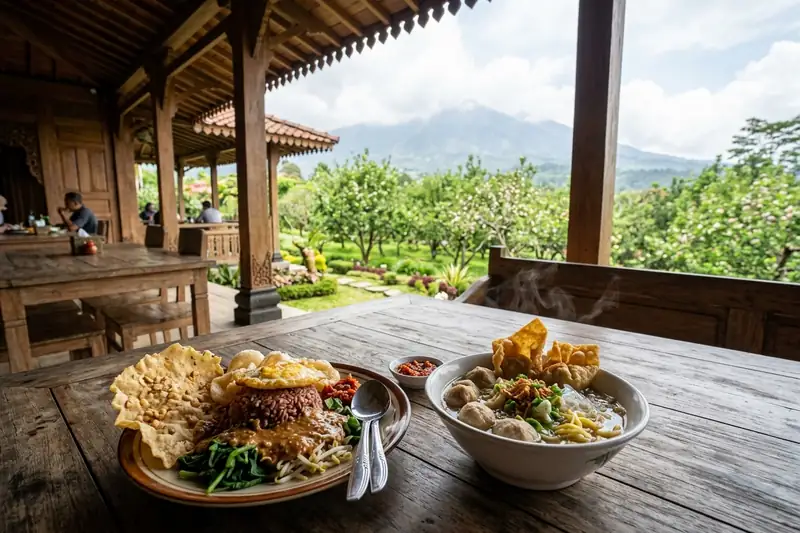

Jawaban Singkat: Menu dusun kuliner batu didominasi hidangan tradisional Nusantara seperti pecel dan bakso, disajikan di dalam rumah joglo bernuansa kayu sambil menghadirkan pengalaman melihat langsung proses memasak.
Ringkasan Inti
- Menu andalan meliputi pecel, bakso, dan berbagai hidangan tradisional khas Nusantara lainnya.
- Hidangan disajikan di dalam bangunan joglo dengan ornamen kayu yang mendominasi suasana ruangan.
- Pengunjung dapat melihat langsung proses pengolahan makanan, bahkan ikut serta dalam memasak.
- Harga menu di kawasan ini umumnya tergolong terjangkau menurut pengalaman pengunjung.
- Suasana pedesaan yang sejuk turut menambah kenikmatan pengalaman bersantap.
1. Apa Saja Menu Andalan di Dusun Kuliner Batu?
Menu andalan di dusun kuliner batu berupa hidangan tradisional Nusantara seperti pecel dan bakso yang disajikan dengan cita rasa khas pedesaan Jawa Timur.
Menurut ulasan kuliner, Wisata Dusun Kuliner menyajikan beragam kuliner tradisional khas Nusantara, seperti pecel, bakso, dan masih banyak lagi. Variasi menu ini menjadikan kawasan tersebut relevan bagi wisatawan yang mencari cita rasa autentik dibandingkan sekadar kuliner modern yang umum ditemukan di kafe-kafe kekinian.
Selain dua menu utama tersebut, kawasan ini juga umumnya menyediakan aneka jajanan tradisional lain yang menyesuaikan tema pedesaan, meskipun daftar lengkap menu dapat berbeda tergantung musim dan ketersediaan bahan baku lokal.
2. Bagaimana Suasana Tempat Makan di Dusun Kuliner Batu?
Suasana makan di dusun kuliner batu didominasi nuansa tradisional Jawa berkat bangunan rumah joglo dengan ornamen kayu, dipadukan dengan udara sejuk khas dataran tinggi Kota Batu.
Sebagaimana dijelaskan dalam ulasan wisata, nuansa pedesaan yang kental terasa di setiap sudut, dengan banyaknya hidangan tradisional yang disajikan di dalam rumah joglo yang ornamen kayunya mendominasi, ditambah udara sejuk khas Kota Batu yang menjadikan pengalaman kuliner semakin nikmat. Kombinasi elemen visual dan udara sejuk ini menjadi salah satu pembeda utama dibandingkan tempat makan di perkotaan pada umumnya.
Desain interior yang mengusung tema pedesaan juga membuat kawasan ini cocok dijadikan latar foto, sekaligus memberikan pengalaman bersantap yang lebih personal dan hangat bagi pengunjung.
Baca Juga
3. Apakah Pengunjung Bisa Melihat atau Ikut Proses Memasak?
Pengunjung dusun kuliner batu dapat melihat langsung proses pengolahan makanan, bahkan berkesempatan ikut serta dalam memasak dan mempelajari cara membuat hidangan tradisional tertentu.
Hal ini dijelaskan dalam ulasan wisata yang menyebutkan bahwa pengunjung dapat menikmati keunikan tempat ini dengan melihat langsung proses pengolahan makanan, bahkan ikut serta dalam memasak dan belajar cara membuat hidangan-hidangan tersebut. Pengalaman interaktif semacam ini menjadikan kunjungan ke dusun kuliner batu lebih dari sekadar wisata makan biasa, karena pengunjung mendapatkan nilai edukasi tambahan tentang kuliner tradisional Nusantara.
Bagi wisatawan yang membawa anak-anak, aktivitas melihat atau ikut memasak ini bisa menjadi momen edukatif yang menyenangkan sekaligus memperkenalkan proses pembuatan makanan tradisional secara langsung.
4. Berapa Kisaran Harga Menu di Dusun Kuliner Batu?
Harga menu di dusun kuliner batu umumnya tergolong terjangkau menurut pengalaman pengunjung, meskipun angka pasti dapat bervariasi tergantung jenis hidangan dan porsi yang dipesan.
Berdasarkan testimoni pengunjung yang dikutip media, kuliner yang dijual di kawasan ini memiliki banyak pilihan dengan harga yang masih terjangkau, ditambah udara sejuk khas Batu yang membuat pengunjung betah berlama-lama. Karena tidak ada daftar harga resmi yang dipublikasikan secara konsisten di seluruh sumber, wisatawan disarankan mengecek daftar menu langsung di lokasi atau melalui kanal resmi pengelola sebelum memesan.
Secara umum, harga kuliner di kawasan wisata Bumiaji dan sekitarnya memang dikenal relatif ramah di kantong dibandingkan kawasan wisata kuliner di pusat kota, sehingga cocok untuk kunjungan keluarga dengan anggaran terbatas.
5. Kesalahan Umum Saat Memilih Menu di Dusun Kuliner Batu
Kesalahan umum yang sering terjadi adalah tidak menanyakan harga terlebih dahulu, memesan terlalu banyak menu tanpa mempertimbangkan porsi keluarga, dan datang saat jam ramai tanpa memperkirakan waktu tunggu.
- Tanyakan harga menu sebelum memesan untuk menghindari kesalahpahaman biaya.
- Sesuaikan jumlah pesanan dengan jumlah anggota rombongan agar tidak mubazir.
- Perhitungkan waktu tunggu lebih lama saat kawasan sedang ramai pengunjung, terutama di musim liburan.
- Manfaatkan momen melihat proses memasak sebagai pengalaman tambahan, bukan hanya fokus pada hasil akhir hidangan.
6. Pertanyaan yang Sering Diajukan
Menu dusun kuliner batu menawarkan pengalaman bersantap yang berbeda melalui sajian tradisional seperti pecel dan bakso di dalam suasana rumah joglo yang khas. Pengalaman melihat atau ikut proses memasak menjadi nilai tambah yang jarang ditemukan di tempat kuliner lain, sementara harga yang terjangkau membuat kawasan ini ramah untuk kunjungan keluarga. Pastikan mengecek daftar menu dan harga terbaru di lokasi agar pengalaman kuliner semakin optimal.
Abiyyu
Seorang penulis artikel yang sudah berpengalaman di dalam dunia wisata outbound Batu Malang.